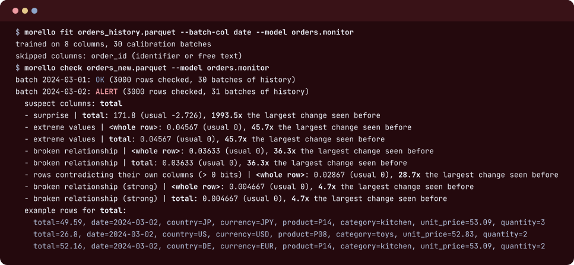

Know when your data stops making sense.
Morello is a data quality monitor for tables that load in batches. It learns what normal rows look like and alerts when the rows of a new batch stop fitting together. You write no rules.

What it catches
Rows that pass every column check and are still wrong.
The highlighted order has a real product, a normal price, a normal quantity and a plausible total. A null check, a range check and a distribution check all pass.
The total does not match the price and the quantity. Morello learns relationships like this one from the table's history, so it notices when a join starts attaching the wrong record, a unit changes, two columns swap or a code is remapped.
| order | product | unit price | qty | total | row |
|---|---|---|---|---|---|
| 03-02-4 | P27 toys | 48.76 | 4 | 195.04 | OK |
| 03-02-5 | P20 books | 26.89 | 3 | 80.67 | OK |
| 03-02-6 | P06 toys | 12.57 | 4 | 50.28 | OK |
| 03-02-8 | P27 toys | 48.76 | 4 | 122.20 | DOES NOT FIT |
Four rows from the demo batch. 48.76 times 4 is 195.04, and the last row says 122.20.
How it works
Learn the table, check each batch, name the column.
Learn
Give Morello a history of the table that you believe is clean, at least 20 batches. It trains a model that predicts each column from the other columns in the row, and it measures how much every check normally moves from batch to batch.
Check
For each new batch it scores a sample of rows and asks how surprising they are given what it learned. It also runs per-column checks for nulls, unexpected values, distribution shift and duplicates.
Alert
A check alerts when it moves more than three times the largest change seen on any earlier clean batch. The report states each problem once, in a sentence, with example rows and the value the model expected. The alert stays open, and keeps failing the pipeline step, until a person accepts the batch or it passes a re-check.
Usage
Point it at a table from the command line, Python or a warehouse.
Morello is open source under the Apache 2.0 license. Install it with pip install git+https://github.com/zahmed333/morello.
Try it on your own history first
morello init orders_history.parquet # which column defines the batches
morello backtest orders_history.parquet --batch-col order_date # which past batches would have alertedCommand line
morello fit orders_history.parquet --batch-col order_date --model orders.monitor
morello check orders_today.parquet --model orders.monitor # exit code 1 when a batch alertsPython
import pandas as pd
from morello import Monitor
history = pd.read_parquet("orders_history.parquet")
monitor = Monitor().fit(history, batch_col="order_date") # daily batches by default
report = monitor.check(pd.read_parquet("orders_today.parquet"))
print(report.text())
if report.alert:
... # stop the pipeline, page someone
monitor.save("orders.monitor") # history grows with every clean batchA table in a warehouse
from morello.table import fit_table, check_table
fit_table(conn, "analytics.orders", batch_col="order_ts", store="s3://bucket/morello")
reports = check_table(conn, "s3://bucket/morello", table="analytics.orders",
results_table="ops.morello_results")
# the sample is taken by a query inside the warehouse, so table size does not matterEvidence so far
Tested on simulated failures in two real public datasets.
Ten failure types at four severities were injected into every day of May 2024 in NYC taxi trips and NYC EMS dispatch records. That month was not used to design or tune anything.
| data | standard checks | row model alone | both, as shipped |
|---|---|---|---|
| NYC taxi trips | 0.51 | 0.64 | 0.77 |
| NYC EMS dispatch | 0.69 | 0.58 | 0.78 |
| Wrong-record joins, taxi | 0.06 | 1.00 | 1.00 |
- Every failure was simulated. Morello has not been tested on real incidents.
- It has not been compared with commercial tools. NannyML's PCA method, run on the same batches, detected 0.19 on taxi and 0.34 on EMS.
- It needs volume. On synthetic lab records, a small table with rows clustered by patient, it added almost nothing over standard checks (0.48 against 0.47).
Where it runs
What has been run, and what has only been written.
| piece | status | detail |
|---|---|---|
| pandas, parquet files, command line | TESTED | unit tests and the demo on this page |
| DuckDB tables | TESTED | including 13.8 million raw taxi rows |
| Spark | TESTED | local session, with scoring on executors |
| dbt | TESTED | dbt-duckdb; the build fails when a batch alerts |
| Airflow | TESTED | Airflow 3.4; the task fails on an alert and on every retry |
| Dagster | TESTED | Dagster 1.13; the asset check fails until the batch is accepted |
| Scala gate | TESTED | compiled and run with spark-submit on Spark 4.3 |
| Snowflake | NOT RUN | stored procedure and SQL dialect are written |
| Databricks | NOT RUN | same code as the Spark test |
| Scala API for the model | NOT BUILT | scoring runs in Python |